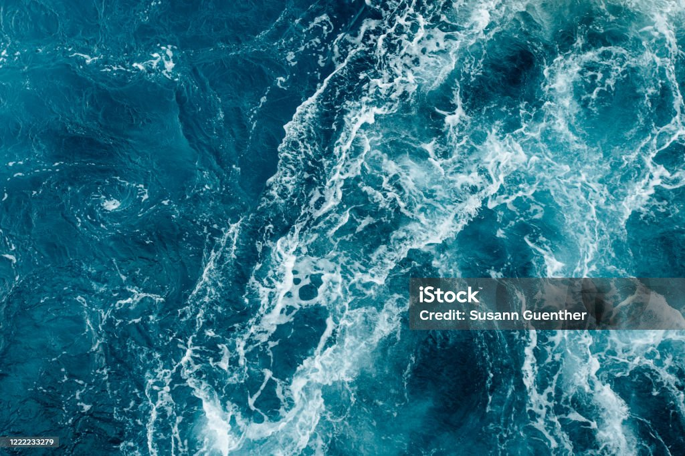

Merhaba, benim adım Emine. Bu küçük sayfada sizlere neden yüzmeyi sevdiğimi ve yüzmenin faydalarından
bahsedeceğim.
Yüzmenin Faydaları
- Fiziksel Fitness: Yüzme, vücudu baştan aşağı çalıştırır ve genel fiziksel kondisyonu arttırır.
- Stres Azaltma: Suyun içinde olmak, zihinsel rahatlama sağlar ve günlük stresi azaltır.
- Esneklik: Farklı yüzme stilleri kullanarak vücut esnekliğini arttırabilirsiniz.
- Kalp Sağlığı: Yüzme, kardiyovasküler sistemi güçlendirir ve kalp sağlığını destekler.
Yüzme Görselleri
İşte yüzme ile ilgili bazı güzel görseller:
Kendi Yüzme Deneyiminizi Keşfedin
Yüzmenin keyfini çıkarmak ve faydalarını deneyimlemek için siz de hemen suya atlayın!